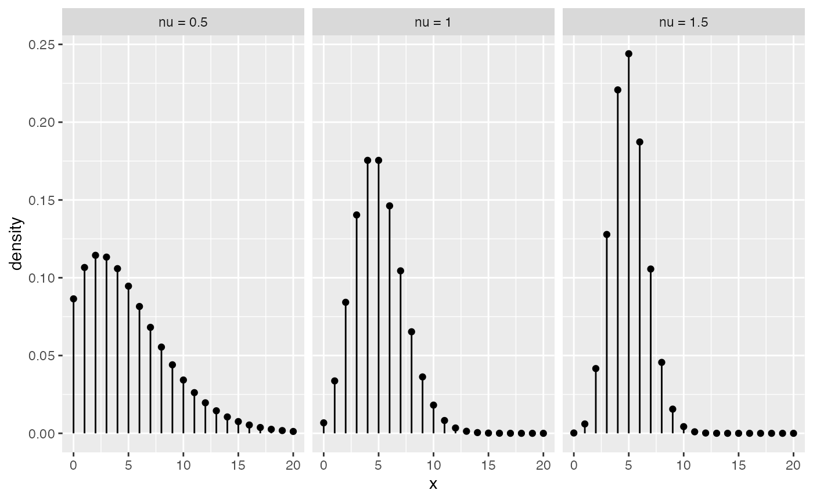

mpcmp package (under construction)vignettes/mpcmp.Rmd
mpcmp.RmdConway–Maxwell–Poisson (CMP or COM-Poisson) distributions have seen a recent resurgence in popularity for the analysis of dispersed counts (e.g., Shmueli et al. (2005); (???), (???); Sellers and Shmueli (2010)). Key features of COM-Poisson distributions include the ability to handle both overdispersion and underdispersion, containing the classical Poisson distribution as a special case, and being a continuous bridge between other classical distributions such as the geometric and Bernoulli distributions. See Shmueli et al. (2005) for a more detailed overview of the history, features and applications of CMP distributions.
The R ((???)) mpcmp package ((???)) provides functionality for estimating a mean-parametrized Conway-Maxwell-Poisson generalzied linear models for dispersed count data. The package is available from the Comprehensive R Archive Network (CRAN) here. Huang (2017) provides the theoretical development of the model that this package bases on.
The CMP distribution was first used by (???) as a model for queuing system with dependent service times. A random variable is said to have a (standard) CMP distribution with rate parameter \(\lambda\) and dispersion parameter \(\nu\) if its probability mass function (pmf) is given by \[ P(Y =y|λ,ν)= \frac{\lambda^y}{(y!)^{\nu}}\frac{1}{Z(\lambda,\nu)}, \quad y =0,1,2,..., \] where \[ Z(\lambda,\nu)= \sum^{\infty}_{y=0}\frac{\lambda^y}{(y!)^{\nu}}, \] is a normalizing constant. The CMP includes Poisson (\(\nu = 1\)), geometric (\(\nu = 0\), \(\lambda < 1\)) and Bernoulli (\(\nu \to \infty\) with probability \(\lambda/(1+\lambda)\)).
One of the major limitations of CMP distributions is that it is not directly parametrized via the mean as it does not have closed-form expression for its moments in terms of the parameters \(\lambda\) and \(\nu\). For the first two moments, approximation can be obtained as \[ \begin{aligned} E(Y) &\approx \lambda^{\frac{1}{\nu}}-\frac{\nu-1}{2\nu}\quad \text{and} \quad Var(Y) \approx \frac{1}{\nu}E(Y), \end{aligned} \] and they can be particularly accurate for \(\nu\leq 1\) or \(\lambda>10^{\nu}\) (see Shmueli et al. (2005)). If \(\nu < 1\), CMP is overdispersed. In reverse, CMP is underdispersed when \(\nu>1\).
As CMP is one of a few distributions that can handle both under- and over-dispersion, the aim is to extend the GLM formulation to the CMP case so that one can model the relationship between \(Y\) and the predictors \(X\). Given a set of covariates \(X \in R^q\), Sellers and Shmueli (2010) proposed a GLM for count response \(Y\) that can be specified via \[ Y|X ∼ CMP(\lambda,\nu), \quad \text{s.t.} \quad \log\lambda = X^{\top}\beta \] where \(\beta \in R^q\) is a vector of regression coefficients. This model however does not provide a closed form relationship between \(E(Y)\) and the linear predictor, making it incompatible with other commonly used log-linear model.
As it is more convenient and interpretable to model the mean \(\mu = E(Y)>0\) of the distribution directly, Huang (2017) proposed to parametrize the CMP distribution via the mean: \[ P(Y = y|\mu, \nu) = \frac{\lambda(\mu,\nu)^{y}}{(y!)^{\nu}}\frac{1}{Z(\lambda(\mu,\nu),\nu)}, \quad y = 0,1,2,\ldots, \] where the rate \(\lambda(\mu,\nu)\) is defined as the solution to the mean constraint: \[ \mu= \sum^{\infty}_{y=0} y\frac{\lambda^y}{(y!)^{\nu}}\frac{1}{Z(\lambda,\nu)}. \] We shall denote this as CMP\(_{\mu}(\mu, \nu)\) distribution to distinguish it from the original/standard one.
A GLM that based on CMP\(_{\mu}\) can then be specified via \[ Y|X ∼ CMP_{\mu}(\mu(X^{\top}\beta),\nu), \] where \[ E(Y|X) = \mu(X^{\top}\beta) = \exp(X^{\top}\beta). \] Note that GLM that based on CMP\(_{\mu}\) is a genuine GLM, so all the familiar key features of GLMs (e.g., McCullagh & Nelder, 1989, Chapter 2) are retained.
The mean-dispersion specification makes CMP\(_{\mu}\) directly comparable and compatible other commonly used log-linear regression models for counts. In particular, the mean \(\mu = \exp(X^{\top}\beta)\) is functionally independent of the dispersion parameter \(\nu\), making it similar in structure to the familiar Negative Binomial regression model for overdispersed counts.
The model can also be extended so that \(\nu\) itself is modelled via a regression with a log-link, i.e. \[ \nu = \exp(\tilde{X}^{\top}\gamma), \] where \(\tilde{X}\) is some covariates.
mpcmp packageThe main modelling function in our mpcmp package is glm.cmp. Once a fitted model object has been obtained, there are assessor functions available to extract the coefficients (coef(), or its alias coefficients()), the fitted values (fitted() or its alias fitted.values()), the residuals (residuals() or its alias resid()), the model frame (model.frame()), the number of observations (nobs()), the log-likelihood (logLik()), and the AIC (AIC()).
You can also use plot() or gg_plot() to obtain diagnostic plots of the fitted model.
Let’s go through some examples to show you what our package can do!
attendance
The attendance dataset (originally from https://stats.idre.ucla.edu/r/dae/negative-binomial-regression/) examines the relationship between the number of days absent from school and the gender, maths score and academic program of 314 students from two urban high schools.
library(mpcmp) data(attendance) library(ggplot2) ggplot(attendance, aes(daysabs, fill = prog)) + geom_histogram(binwidth = 1) + facet_grid(prog ~ ., margins = TRUE, scales = "free")

It is obvious that there are some overdispersion in this dataset. We can use glm.cmp() to fit the mean-parametrized CMP model to this data set.
M.attendance <- glm.cmp(daysabs~ gender+math+prog, data=attendance) summary(M.attendance) #> #> Call: glm.cmp(formula = daysabs ~ gender + math + prog, data = attendance) #> #> Deviance Residuals: #> Min 1Q Median 3Q Max #> -2.1925 -1.1166 -0.3973 0.2964 2.8154 #> #> Linear Model Coefficients: #> Estimate Std.Err Z value Pr(>|z|) #> (Intercept) 2.7146 0.1904 14.26 < 2e-16 *** #> gendermale -0.2147 0.1171 -1.83 0.067 . #> math -0.0063 0.0024 -2.65 0.008 ** #> progAcademic -0.4253 0.1695 -2.51 0.012 * #> progVocational -1.2539 0.1895 -6.62 3.7e-11 *** #> --- #> Signif. codes: 0 '***' 0.001 '**' 0.01 '*' 0.05 '.' 0.1 ' ' 1 #> #> (Dispersion parameter for Mean-CMP estimated to be 0.02024 ) #> #> #> Null deviance: 455.83 on 313 degrees of freedom #> Residual deviance: 377.44 on 309 degrees of freedom #> #> AIC: 1739.026
As mpcmp is directly comparable and compatible with other commonly used log-linear regression models for counts, interpreting parameters is straight forward. Our model estimates that students in the General program (the reference level) are expected to miss exp(+1.254) = 3.5 times more days of school compared to students in the Vocational program.
sitophilus
Ribeiro et al. (2013) carried out an experiment to assess the bioactivity of extracts from different parts (seeds, leaves and branches) of Annona mucosa (Annonaceae) to control Sitophilus zeamaus (Coleoptera: Curculionidae), a major pest of stored maize/corn in Brazil.
In this experiment:
library(tidyverse) data(sitophilus) sitophilus %>% group_by(extract) %>% summarise(mu = mean(ninsect), sigma2 = var(ninsect)) #> # A tibble: 4 x 3 #> extract mu sigma2 #> <fct> <dbl> <dbl> #> 1 Control 31.5 62.5 #> 2 Leaf 31.3 94.0 #> 3 Branch 29.9 88.8 #> 4 Seed 1.1 1.66
It appears that the treatment may have some impact on both the mean and variance of the number of progeny. Recall that non-constant variance is a given in a GLM, non-constant variances do not necessarily means varying dispersion. Nonetheless, we will try to use the treatment to explain the dispersion in the data set.
data(sitophilus) M.sit <- glm.cmp(formula = ninsect ~ extract, formula_nu = ~ extract, data = sitophilus) summary(M.sit) #> #> Call: glm.cmp(formula = ninsect ~ extract, formula_nu = ~extract, data = sitophilus) #> #> Deviance Residuals: #> Min 1Q Median 3Q Max #> -2.21084 -1.16849 0.07494 0.64152 1.72653 #> #> Mean Model Coefficients: #> Estimate Std.Err Z value Pr(>|z|) #> (Intercept) 3.4500 0.0780 44.25 <2e-16 *** #> extractLeaf -0.0064 0.1221 -0.05 0.96 #> extractBranch -0.0521 0.1234 -0.42 0.67 #> extractSeed -3.3547 0.3621 -9.26 <2e-16 *** #> --- #> Signif. codes: 0 '***' 0.001 '**' 0.01 '*' 0.05 '.' 0.1 ' ' 1 #> #> Dispersion Model Coefficients: #> Estimate Std.Err Z value Pr(>|z|) #> (Intercept) -0.665 0.457 -1.45 0.15 #> extractLeaf -0.383 0.651 -0.59 0.56 #> extractBranch -0.372 0.651 -0.57 0.57 #> extractSeed -0.118 1.546 -0.08 0.94 #> #> Null deviance: 257.211 on 39 degrees of freedom #> Residual deviance: 41.679 on 32 degrees of freedom #> #> AIC: 260.8279
From the model summary, we can see that there is not much evidence to suggest the dispersions are varying across treatment groups. We can also formally test whether a constant dispersion model is sufficient here using a likelihood ratio test as the two models are nested:
M.sit2 <- update(M.sit, formula_nu = NULL) cmplrtest(M.sit, M.sit2) #> #> Likelihood ratio test for testing both COM-Poisson models are equivalent #> LRT-statistic: 0.439 #> Chi-sq degrees of freedom: 3 #> P-value: 0.932
As a result, our final model is
summary(M.sit2) #> #> Call: glm.cmp(formula = ninsect ~ extract, data = sitophilus) #> #> Deviance Residuals: #> Min 1Q Median 3Q Max #> -1.9515 -1.2310 0.0794 0.6255 1.6762 #> #> Linear Model Coefficients: #> Estimate Std.Err Z value Pr(>|z|) #> (Intercept) 3.4500 0.0885 39.00 <2e-16 *** #> extractLeaf -0.0064 0.1253 -0.05 0.96 #> extractBranch -0.0521 0.1267 -0.41 0.68 #> extractSeed -3.3547 0.3722 -9.01 <2e-16 *** #> --- #> Signif. codes: 0 '***' 0.001 '**' 0.01 '*' 0.05 '.' 0.1 ' ' 1 #> #> (Dispersion parameter for Mean-CMP estimated to be 0.3957 ) #> #> #> Null deviance: 234.470 on 39 degrees of freedom #> Residual deviance: 41.408 on 36 degrees of freedom #> #> AIC: 253.2668
There are three example datasets currently included in the mpcmp package which cover over- and under-dispersed counts. Sample analyses for these datsets are provided in either the help page for the datasets or for the glm.cmp() function.
There are other R packages to deal with CMP models and they all help the writing and construction of this package.
compoisson: Routines for density and moments of the COM-Poisson distribution under original parametrization by (???)
CompGLM: Fit COM-Poisson models under original parametrization (includes dispersion modeling) by (???).COMPoissonReg: Fit COM-Poisson models under original parametrization (includes zero-inflation and dispersion modeling) by (???).glmmTMB: Fit (among other) COM-Poisson models under a different mean-parametrization (includes zero-inflation, dispersion modeling and random effects) by (???).Huang, Alan. 2017. “Mean-parametrized Conway–Maxwell–Poisson regression models for dispersed counts.” Statistical Modelling 17 (6): 359–80. https://doi.org/10.1177/1471082X17697749.
Sellers, Kimberly F., and Galit Shmueli. 2010. “A flexible regression model for count data.” Annals of Applied Statistics 4 (2): 943–61. https://doi.org/10.1214/09-AOAS306.
Shmueli, G., T. P Minka, J. B Kadane, S. Borle, and P. Boatwright. 2005. “A useful distribution for fitting discrete data:revival of the conway-Maxwell_Poisson distribution.” Applied Statistics 54 (1): 127–42. https://doi.org/10.1111/j.1467-9876.2005.00474.x.